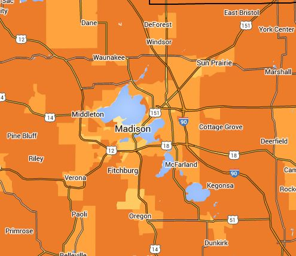

One of Madisons major strengths that bodes well for its future is that it has a bus system that will almost certainly grow bigger and better assuming we invest adequately in the future, of course. Young people, many
who grew up in transitless suburbs, are much more enamored with transit than their parents, and consider factors such as transit accessibility critical when deciding on where to live and/or start a business. Meanwhile, the boomer generation is giving up its car keys, using transit more, and deciding to retire to places such as Madison.
So why, according to figures from the Citys Finance Department, do almost half (48 percent) of Metros employees live outside Madison in places that have no transit? Apparently, many Metro employees reside in such neighboring communities as Sun Prairie, McFarland, Waunakee or Westport not to mention farther away in such places as Oregon, Stoughton, Sauk City, Edgerton, Baraboo or Fond du Lac.
For historical reasons? As in the rest of the country, what used to be a fairly self-contained major city, Madison, has become a central city in an economically interdependent urbanized area or metropolis, and even newer parts of the city itself are often downright hostile to the pedestrian, bicyclist or transit rider. While the City of Madison itself more than doubled in geographic spread after 1960, often by annexing neighboring towns, its proportional share of the countys overall urbanized population still shrank. For over five decades now, the population of the Madison area has spread out across municipal boundaries, and Metro employees have been part of that trend. If you think they might think differently, think again. In fact, they were leaders in challenging the Citys residency requirement.
Is the attraction of suburban living economic? After all, one hears constantly about how expensive Madison is. But if we are to believe information available at the location affordability portal website maintained by HUD and the US DOT, that is wrong. A median-income family of four people with two commuters and an annual income of $61,006 living on South Park St. in South Madison would spend 39 percent of its income on housing (23 percent) and transportation (16 percent), whereas a similar household on North Gammon Road near Old Sauk on the West side would spend 45 percent (housing 25 percent, transportation 20 percent). And a similar household on Livingston St. in the Tenney/Lapham area of the Isthmus might spend 42 percent (housing 26 percent, transportation 16 percent).
Even in such places as Jenifer Street on the Isthmus or Sherman Avenue on the Near North Side, those households might spend 47 percent of their income on housing (29 percent) and transportation (18 percent). Interestingly, that is the same as what is estimated for Oakland Ave. and elsewhere in Sun Prairie, although the household would spend less on housing (26 percent vs. 29 percent) and more on transportation (21 percent vs. 18 percent). Meanwhile, that same household might spend over half its income (54-59 percent) on housing and transportation in Waunakee or Westport.
Such comparison does not even take into account such factors as the time costs involved in having to drive in and out of the City every workday, more than once if the job is split between morning and afternoon peak periods, nor the many other less tangible pros and cons of living far away from work and not having access to transit. One con, often recognized more by women than men, is what might be referred to as the chauffeur factor of having to give rides to dependents (such as children or aging parents) who might use transit if transit were available.
The fascinating part of this is that urban sprawl appears to have been planned, and people thought they wanted it, both inside and outside Madison boundaries. The zoning code in Madison that existed between 1966 and 2012 actually forbade the development of mixed-use buildings or mixed-use neighborhoods, something that used to be common in earlier developments. And home buyers had to acquiesce to buying homes according to such rules if they were to quality for a home loan. Do you know of many homes in Madison built soon after World War II that had porches in the front, for example? Did you ever wonder why?
A newer neighborhood on Madisons outskirts might boast The single-family residential neighborhood was built up in the 1990s. Lakefront homes are located on the western edge of the neighborhood. Contemporary ranch and split level homes are located along the quiet interior residential streets. Meadow Ridge Park, a 28-acre prairie and woodland area, is only one of the natural resources at the finger tips of residents...,: but that description fails to mention that, even using the unrealistically liberal definition of transit access (bus stop within a quarter mile) only 55 percent of the households had access to public transit. As with their suburban brethren, residents of the neighborhood are required to travel by car.
As of 2014 less than two-thirds of the residents of Madison itself had access to public transit according to the Citys Neighborhood Indicator project. And if you ask most real estate agents, accessibility to transit is not a factor people consider when deciding where or what home to buy or rent. But what is important to a 25-year old today is different from what was important to someone who was 25 in 1990 or someone who will be 25 in 2040. Is Madison up to the challenge?
 Madison Area Bus Advocates
Madison Area Bus Advocates